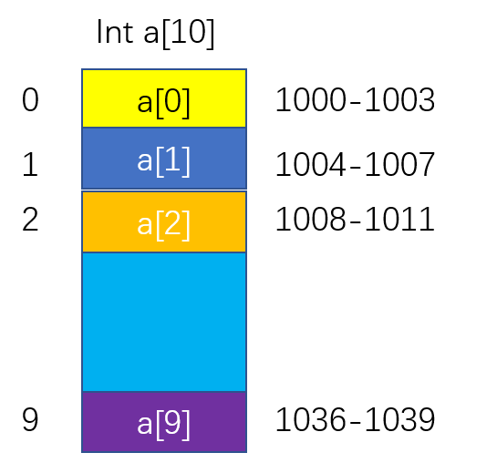

什么是数组？数组是一种用连续的存储空间来存储相同数据类型的存储结构。理解连续的存储空间可以类比一层一层的楼梯，每个台阶都存储一个数据，连续的台阶就可以当作一个数组。
大多数编程语言都会有数组的概念，并且大多数编程语言的数组的下标是从0开始的，理解数组的下标为什么以0开始时需要一些计算机基础的知识。
首先需要理解数组的在计算机中的内存地址，连续存储空间以及相同数据类型

以下公式是计算数组第K个位置的元素的地址，base_address是数组首个元素地址，type_size是数组中元素的数据类型大小。如果数组下标从1开始则第K个元素的地址计算操作就比数组下标是0多个减法的操作。这在最初的C语言中是会影响性能的，尤其是在数组这个数据结构经常使用的情况下。
1 | a[k]_address = base_address + k * type_size |
此外根据上面的公式也是可以得出一个结论的：数组支持随机访问，并且根据下标进行随机访问的时间复杂度是O(1)。那什么叫做随机访问，简单来说就是我有一个数组，然后你随便给我一个数字，只要数组存在这个下标的元素， 我都可以立即找到该元素并且花费的时间是O(1)。
首先看看数组的插入操作，
1 | void addElement(int[] arr, int element, int position){ |
上面代码只是简单的描述了数组的插入操作大致的逻辑，把一个元素插入到数组中主要有三种情况。第一种是插入到数组末尾，这时不需要什么额外的操作，直接arr[position] = element即可；第二种情况是插入到数组头部，这时候需要将所有的元素往后移动，这时候的时间复杂度和数组规模有关，假设数组规模大小n,这时候的时间复杂度是O(n)；第三种情况是插入到数组中间某个位置position,这时候需要将postition之后的元素都往后移一位，时间复杂度是O(n-postition)，也可以理解为是关于n的线性关系。从数学的角度分析，插入到数组每个位置的概率几乎一样，第一个位置需要移动n个元素，第二个位置需要移动n-1位，以此类推，最后一个位置不需要移动元素，平均下来，每个位置需要移动的元素（0+1+2+…n）/(n+1),仍然是关于n的线性关系。综上述数组的插入操作的平均时间复杂度是O(n)。
关于数组的删除操作其实也是类似的，删除操作的平均时间复杂度是O(n).
简单应用：关于数组的删除操作，如果删除操作太过于频繁，这时候为了减少该重复的操作，一般都会采用标记删除的方法。即把要删除的元素做一个标记，待到一定时机一次性删除本来应该删除的元素。
关于链表，首先需要理解链表是怎样的一个数据结构，其次链表的基本操作的图解，最后就是编写链表代码。
以单链表为例，单链表的结构就像排队一样，队列中的每个人只知道在自己以及自己前面的一个人是谁，而不知道自己后面的一个人是谁。这些都好理解，唯一有难度的就是如何编写链表的代码。
第一个概念指针或引用:C语言中有指针而Java中有引用，但两者其实是同一个东西。指针或引用都是一个存储着内存地址的变量，类似于一个装有收件人信息的包裹。知道指针的概念之后，你可以使用指针去指向链表中的任意一个结点进行操作。参照排队，正在排队的每个人都可以是一个结点，而我之所以知道我前面的一个人，是因为我本身知道我前面的一个人的内存地址，通过内存地址可以直接找到他。或者可以更形象的说，只有我们每个人都记住自己前面的一个人的内存地址才能构成一个链表，否则有可能在中途断链。但是如果有人中途插队或者离队的话，那怎么操作呢，这时候就需要借助指针或引用的概念。
有人中途插队：假设有x想插队，x想插到y后面，已知y后面是z。我们要知道x没插队之前，z存储的前一个人的内存地址是y，现在呢x要插队，插队时是必须要保证链表不能断的,所以z存储的前一个人的内存地址应该是x,并且x存储的前一个人的内存地址应该是y，另外别忘了，x插队之前必须先记住自己前面的一个人的内存地址然后让自己后面的一个人记住自己的内存地址。